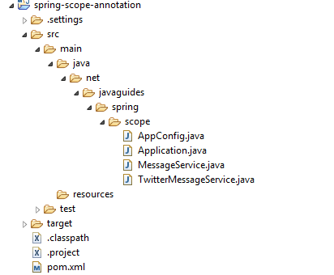

In this article, we will discuss how to create a bean scoped as a singleton using the @Scope annotation.
We use @Scope to define the scope of a @Component
class or a
@Bean
definition.
When a Spring bean is scoped as a singleton, the Spring IoC container creates exactly one instance of the object defined by that bean definition.
By default, the Spring IoC container creates and initializes all beans as singletons. However, we can define a bean's scope as a singleton using the scope="singleton" attribute of the element or the @Scope(value = ConfigurableBeanFactory.SCOPE_SINGLETON) annotation.
We will demonstrate this example using Annotation based (@Component) as well as Java-based configuration(@Bean).
Let's create an example to demonstrate the use of @Scope annotation with a
singleton scope in a spring application.
Create a simple Maven project using your favourite IDE. Refer to the section below for the packaging structure. If you are new to Maven, read this article: How to Create a Simple Maven Project.
The below diagram shows a project structure for your reference -
Note that Spring Framework 6 required Java 17 or later version:
<project xmlns="http://maven.apache.org/POM/4.0.0"
xmlns:xsi="http://www.w3.org/2001/XMLSchema-instance"
xsi:schemaLocation="http://maven.apache.org/POM/4.0.0 http://maven.apache.org/xsd/maven-4.0.0.xsd">
<modelVersion>4.0.0
<groupId>org.example
<artifactId>learn-spring-framework
<version>1.0-SNAPSHOT
<properties>
<maven.compiler.source>17
<maven.compiler.target>17
</properties>
<dependencies>
<!-- https://mvnrepository.com/artifact/org.springframework/spring-core -->
<dependency>
<groupId>org.springframework
<artifactId>spring-core
<version>6.0.4
</dependency>
<!-- https://mvnrepository.com/artifact/org.springframework/spring-context --<
<dependency>
<groupId>org.springframework
<artifactId>spring-context
<version>6.0.4
</dependency>
</dependencies>
</project>
Next, let's create a MessageService interface as follows.
package net.javaguides.spring.scope;
public interface MessageService {
String getMessage();
void setMessage(String message);
}
Let's create the TwitterMessageService class, which implements the MessageService interface.
package net.javaguides.spring.scope;
import org.springframework.beans.factory.config.ConfigurableBeanFactory;
import org.springframework.context.annotation.Scope;
import org.springframework.stereotype.Component;
@Component
@Scope(value = ConfigurableBeanFactory.SCOPE_SINGLETON)
public class TwitterMessageService implements MessageService {
private String message;
@Override
public String getMessage() {
return message;
}
@Override
public void setMessage(String message) {
this.message = message;
}
}
package net.javaguides.spring.scope;
import org.springframework.context.annotation.ComponentScan;
import org.springframework.context.annotation.Configuration;
@Configuration
@ComponentScan(basePackages = "net.javaguides.spring")
public class AppConfig {
}
@ComponentScan annotation scans all beans whose class is annotated by the
@Component annotation in a package
specified by the basePackages attribute.
Let's create a main class and run an application.
package net.javaguides.spring.scope;
import org.springframework.context.annotation.AnnotationConfigApplicationContext;
public class Application {
public static void main(String[] args) {
AnnotationConfigApplicationContext context = new AnnotationConfigApplicationContext(AppConfig.class);
MessageService messageService = context.getBean(MessageService.class);
messageService.setMessage("TwitterMessageService Implementation");
System.out.println(messageService.getMessage());
MessageService messageService1 = context.getBean(MessageService.class);
System.out.println(messageService1.getMessage());
context.close();
}
}
TwitterMessageService Implementation
TwitterMessageService Implementation
Let's develop the same example using Java-based configuration with @Bean annotation.
package net.javaguides.spring.scope;
public interface MessageService {
String getMessage();
void setMessage(String message);
}
Let's create the TwitterMessageService class, which implements the MessageService interface.
package net.javaguides.spring.scope;
import org.springframework.beans.factory.config.ConfigurableBeanFactory;
import org.springframework.context.annotation.Scope;
import org.springframework.stereotype.Component;
public class TwitterMessageService implements MessageService {
private String message;
@Override
public String getMessage() {
return message;
}
@Override
public void setMessage(String message) {
this.message = message;
}
}
Declare the above beans in the Java-based configuration class.
package net.javaguides.spring.scope;
import org.springframework.beans.factory.config.ConfigurableBeanFactory;
import org.springframework.context.annotation.Bean;
import org.springframework.context.annotation.Configuration;
import org.springframework.context.annotation.Scope;
@Configuration
public class AppConfig {
@Bean
@Scope(value = ConfigurableBeanFactory.SCOPE_SINGLETON)
public MessageService messageService() {
return new TwitterMessageService();
}
}
Let's create a main class and run an application.
package net.javaguides.spring.scope;
import org.springframework.context.annotation.AnnotationConfigApplicationContext;
public class Application {
public static void main(String[] args) {
AnnotationConfigApplicationContext context = new AnnotationConfigApplicationContext(AppConfig.class);
MessageService messageService = context.getBean(MessageService.class);
messageService.setMessage("TwitterMessageService Implementation");
System.out.println(messageService.getMessage());
MessageService messageService1 = context.getBean(MessageService.class);
System.out.println(messageService1.getMessage());
context.close();
}
}
TwitterMessageService Implementation
TwitterMessageService Implementation